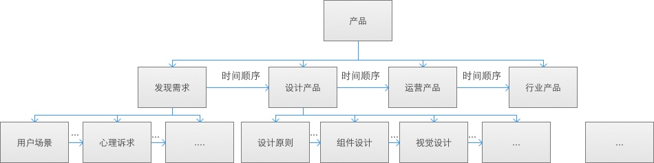

如何使用evernote将知识系统化
2015/11/7 jinbo
像很多人一样，刚开始我只会用evernote收藏一些网络文章(webclipper插件)或者记录一些零碎的笔记。所有知识都是杂乱的堆积在evernote这个仓库中。当我需要某个知识点时，通过evernote检索到该知识点，和我直接使用搜索引擎检索到该知识点并无多大差别。如果是用来记忆笔记，那么和mac自带的notebook.app并无多大区别。这让我常常感觉evernote的价值并不大。 后来，在不断总结中，我发现几条使用evernote的要义。遵守这些规则，我的知识量得到了迅速的提升，并且知识呈现系统化网络化结构特征。每个知识碎片犹如渔网的节点，这些节点与节点间相互关联组织成知识的网络。通过任何一个节点都可以拧起(回忆)整个知识的网络。有木有很神奇的赶脚？ 1. 每条笔记都是原创手写的笔记。 2. 金字塔形状知识结构，同层知识点必须有逻辑关联。 3.使用标签而非笔记本组织知识 4.随时随地记录 随时随地记录，不断织网，填补断线的地方，这样日积月累，知识就越来越多越来越系统化。大量系统的知识储备能给我们工作生活带来极大的帮助。坚持使用evernote会让你非常快速的提升。使用evernote的规则
遵守这条规则会加深对知识的记忆帮助理解和发现新的疑问，从而触发进一步学习。
寻找逻辑关系和优化逻辑关系是把知识系统化的核心和难点。

逻辑关系可以是事件发生的步骤、先后顺序、地理位置的顺序等等一切方便你组织信息的关系都可以。
原因是标签不仅允许多级嵌套而且允许一条笔记多个归类（标签即为归类)。
只有支持多级嵌套才能形成网状知识结构。虽然一条笔记允许多个标签，但还是建议每条笔记都取尽可能少的标签。一般一条笔记一个标签，多则2个，目前我没有出现过三个标签的笔记。只有当你知识量极其庞大时才可能使用到3个标签。
随时随地，你都会发生各种让你好奇的事情或者转瞬即逝的灵感，使用evernote把他们记下，并归类整理。比如
- 逛植物园遇到不认识的花草树木，拍照并记录归纳到知识体系中
- 使用app时候发现一个好的设计，截屏并写下自己的感想，然后归纳的自己知识体系中。
- 上班途中，当你看kindle发现某个精妙的内容，在evernote记录下自己的看法，并归纳到知识体系中。最后